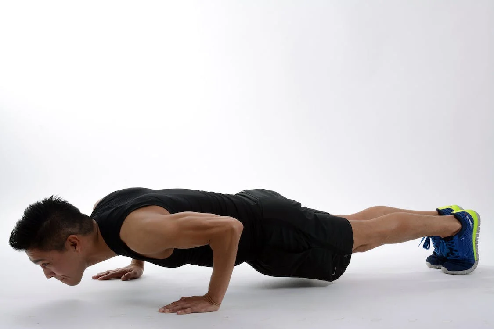
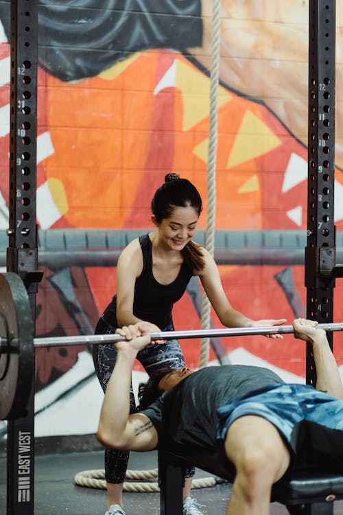
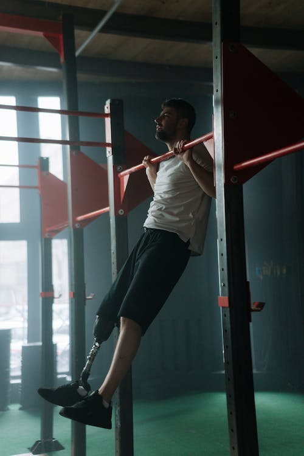
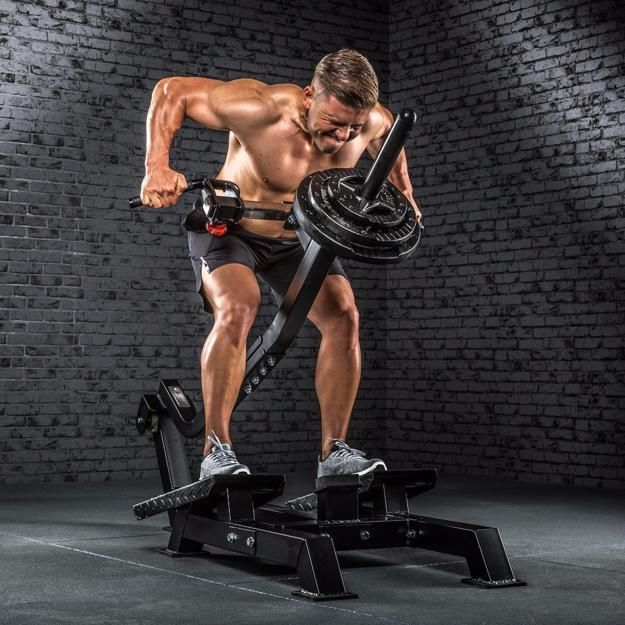
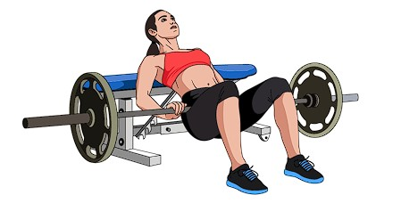
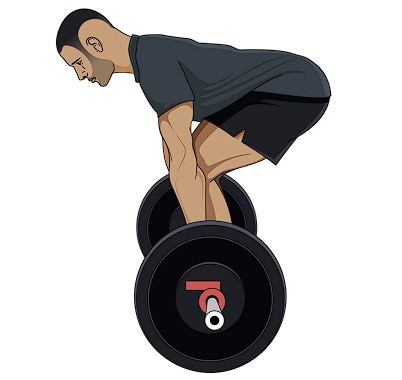
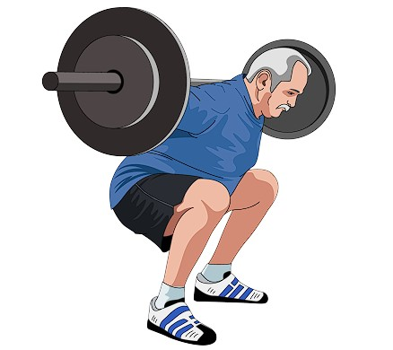
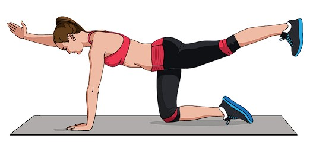
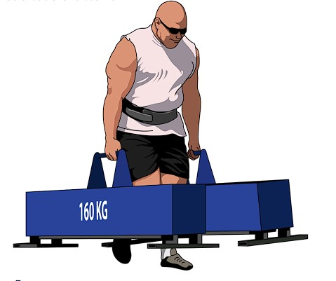

Empujes
Lagartija:Apoyar las manos en el suelo manteniendo la integridad del tronco, como en una plancha prona (boca abajo). Procurar que durante la fase descendente, la flexión se produzca en la articulación del codo y la extensión en la del hombro.En su versión más básica, mantener el antebrazo perpendicular al suelo. A mayor separación de manos, el trabajo se enfocará más en el grupo aductor, como el pectoral mayor; a mayor cierre, en los extensores del codo (tríceps)

Banco plano: Acostado en el banco y con una abducción de hombros que puede ir entre los 45° a 75° (variable según objetivos), mantener las escápulas en retracción en el descenso y neutras durante el empuje. Al descender la barra hacia el pecho, mantener los antebrazos perpendiculares al piso. El arco de la columna y el “leg drive” de los miembros inferiores, provee mayor estabilidad y permite integrar a todo el sistema a través de las tensiones musculares.
Jalones
Dominadas:Según la versión, podremos subir mediante la flexión de hombros hasta la altura del pecho o pasando el mentón sobre la barra. Previo a la elevación, activaremos las escápulas para que los miembros superiores se encuentren “anclados” al tronco. Se puede hacer una versión lenta y controlada o rápida y explosiva. La primera, para el desarrollo de la estructura y la segunda, para la potencia.
Remos clasicos:Se estila hacer un agarre prono (palmas hacia el cuerpo) pero también se puede hacer la versión supina. Los pies separados, aproximadante un poco más que el ancho de hombros. Flexionar la cadera hasta que el tronco se acerque a una posición paralela con el piso, al tiempo que se mantiene la columna neutra. Alcanzamos una posición en la cual los codos quedan extendidos y la barra colgando de los miembros superiores, para luego jalarla hacia el tronco. Alcanzar la parte baja del pecho o la zona abdominal. Luego volver a la posición de extensión.
Dominancia de cadera
Hip-thrust:Con la zona dorsal alta apoyada en elevación y la barra sobre nuestras caderas, realizaremos flexiones y extensiones de cadera. La extensión de cadera, se realiza hasta nivelar la pelvis con el tronco y los muslos, sin compensaciones en la zona lumbar o el resto de la columna. La pelvis podría posicionarse un poco en retroversión, para que actúen más los glúteos. Pueden agregarse bandas elásticas en los miembros inferiores, para requerir un momento de abducción en las caderas e integración con todo el grupo glúteo.
Peso Muerto:Enfrentando la barra, con las rodillas y caderas flexionadas y con las escápulas por encima del agarre, extendemos primero las rodillas al tiempo que desplazamos la barra hacia arriba. Al acercarse la barra a las rodillas, comenzamos a extender las caderas al tiempo que se continúan extendiendo las rodillas. Finalmente, llegamos a la triple extensión de rodilla, cadera y tobillos mientras la barra se encuentra cercana al cuerpo.
Dominancia de rodilla
SentadillaSu ejecución será diferente en cada tipo de cuerpo. En su figura básica, buscamos bajar los más profundo que podamos al tiempo que mantenemos la integridad de las curvas de la columna. Sin embargo, según las proporciones de cada cuerpo, se ejecutará con el tronco más erguido o inclinado, con los pies más separados o más juntos y con las rodillas pasando o no, la punta del pie.
Core y transporte
PlanchasPor lo general se realizan apoyando las manos o los codos en el suelo. Para dificultarlo, se pueden alejar los apoyos entre sí. Sostener la zona lumbar estable y con las curvas mantenidas. Evitar cualquier tipo de movimiento o compensación en el tronco y en la relación de este con las extremidades. Mantener el cráneo alineado con el resto de la columna vertebral. Mantener la cintura pélvica a nivel con respecto a la cintura escapular.
Granjero:Levantamos peso repartido entre ambas manos. Lo más pesado posible mientras esto no altere el movimiento a realizar. Ajustamos los miembros superiores bien activados y conectados con el cuerpo. Caminamos durante al menos 30 segundos, el tiempo dependerá de la carga, progresiones, etcétera. Intentamos mantener un patrón de marcha normal, sin inclinaciones ni desequilibrios.
